19th Plinius Conference · Murcia · Wednesday 7 October 2026, 09:30 · Session PL1 · Plinius19-89
Identifying the spatio-temporal drivers of Mediterranean heatwaves: a machine learning feature selection framework

10 / 12sites with skill
0.73–0.90test AUC at those sites
0.38 vs 0.19test F1 vs always-yes
3–17 dlead of robust precursors
71candidate drivers
36CRO runs (12 sites × 3 seeds)
Framework

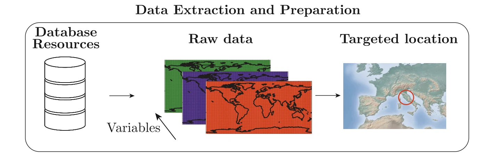

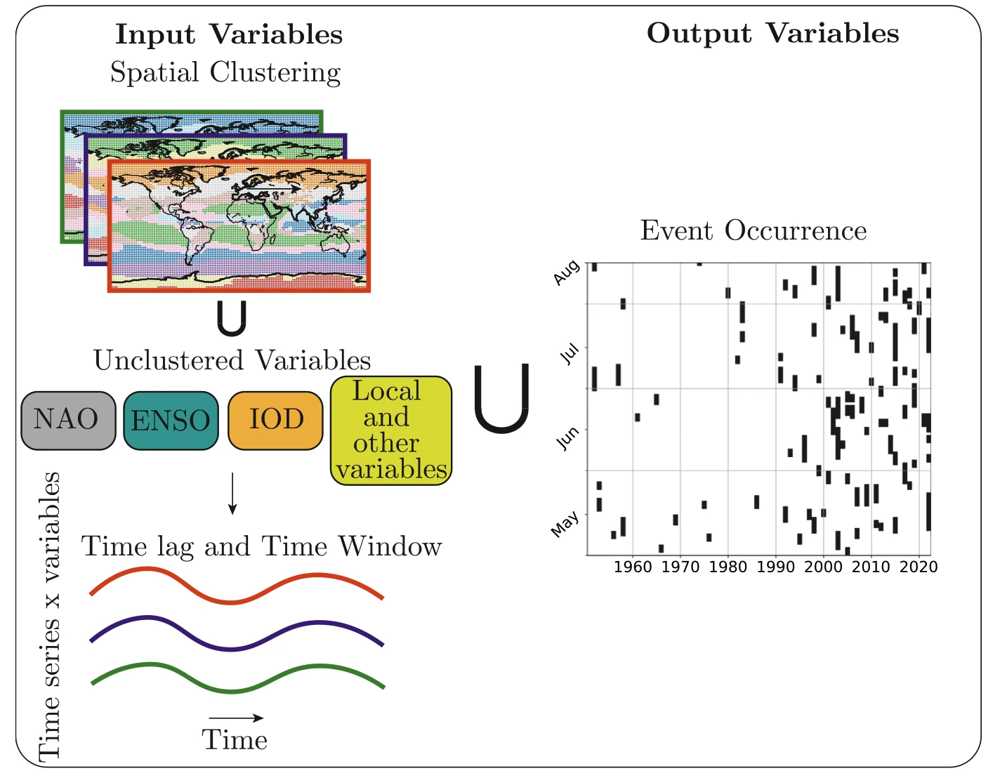

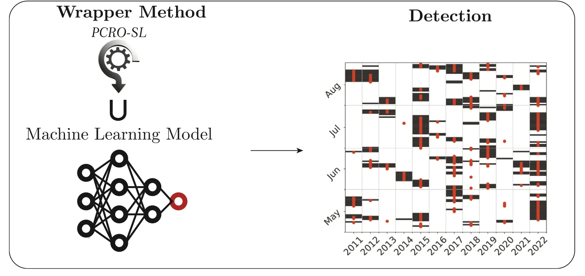
Conclusions
- 01STCO-FS skilfully predicts summer heatwave days at 10 of 12 Mediterranean sites.
- 02Skill is highest in the central and eastern Mediterranean; the western sites show little predictability.
- 03Robust precursors are local and short-range: warm Tmax and a Z500 ridge over or next to the site, about 3–17 days ahead.
- 04The CRO selects all eight Z500 clusters somewhere, but only five of them (four regional modes) show a significant anomaly before heatwaves in both train and test; the Alps–Balkans ridge does so at five neighbouring sites.
- 05Dry soils are often selected 10–30 days ahead, but they are robust only in Turkey.
- 06The KMeans clusters behave as varimax-rotated EOFs: regional modes of variability.
Explore the results
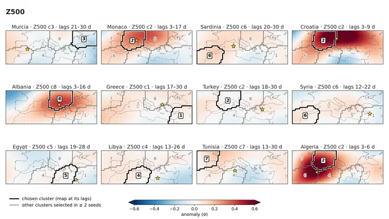
Talk figures
11 figures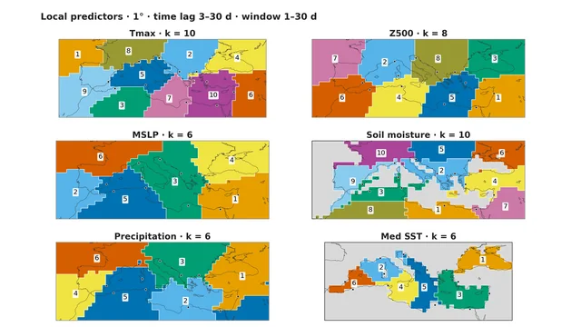
Study design
34 figures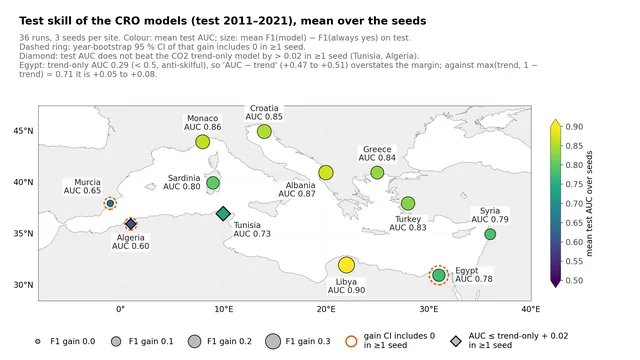
Skill and overfitting
3 figures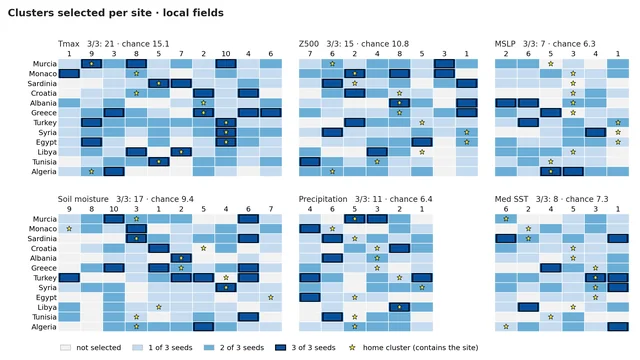
What the CRO selects
12 figures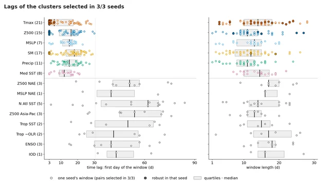
Time lags
6 figures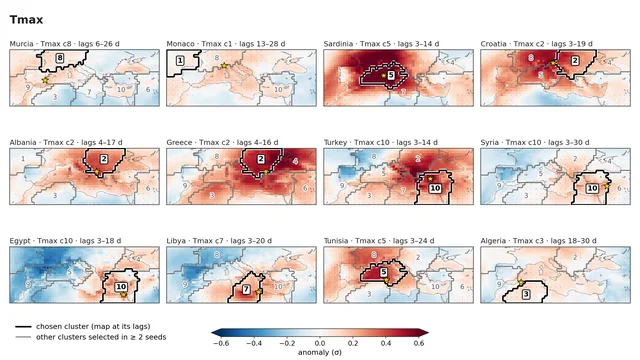
Anomalies at the selected clusters
73 figures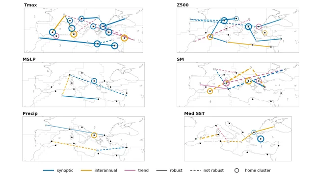
Raw, detrended and within-year composites
83 figures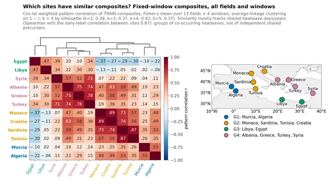
Cross-site composites and site groups
136 figures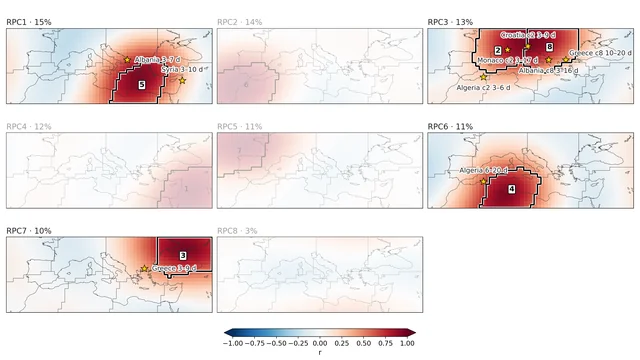
EOFs vs clusters
8 figuresUniversidad de Alcalá · CMCC · MedEWSa · ARTEMIS · Funded by the European Union